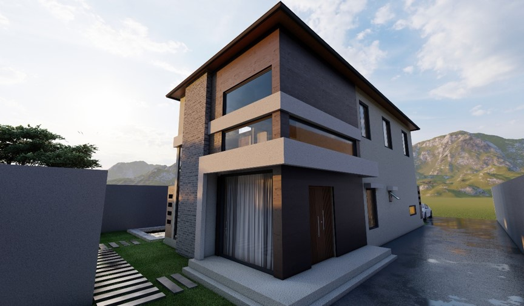
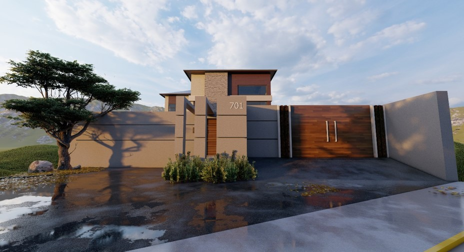

ARCHITECTURAL DESIGN
Two Storey Modern House ( Philippines )
Nestled in the serene beauty of the mountains, this modern house showcases a perfect blend of contemporary architecture, natural elegance, and functional design. Defined by clean lines, minimalist forms, and expansive glass windows, the residence embraces natural light and panoramic mountain views.
Natural materials, including stone, wood, and concrete, create a sophisticated yet warm atmosphere that complements the surrounding landscape. Open-plan living spaces, spacious terraces, and thoughtfully designed outdoor areas establish a seamless connection between indoor comfort and nature.
Strategically positioned to maximize scenic views, privacy, and natural ventilation, the house offers a peaceful retreat from urban life. Each architectural element balances aesthetics, comfort, and sustainability, creating a timeless residential design where contemporary living meets the tranquility of nature.